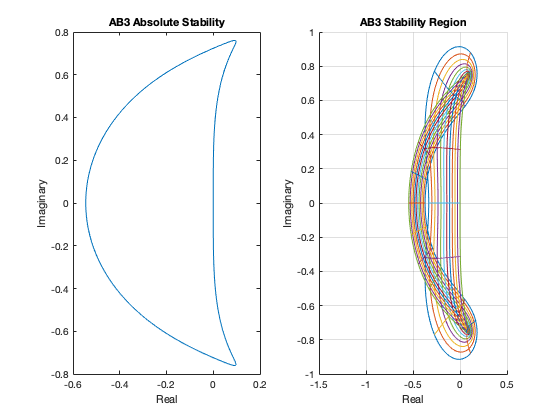
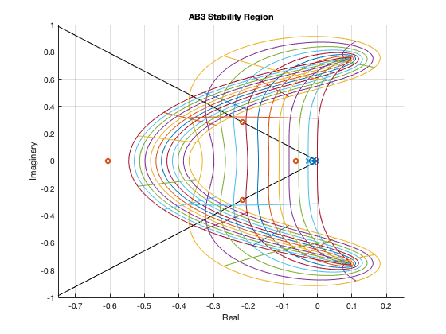
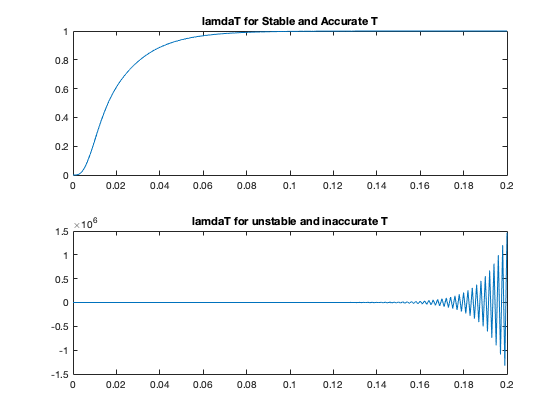
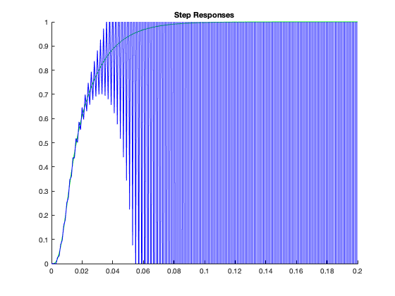

Contents
close all; clc; clear;
R1 = 500;
R2 = 1000;
R3 = 1000;
C1 = 4.7e-6;
C2 = 4.7e-6;
C3 = 4.7e-6;
L = 2;
A = [-1/(C1*R2), 1/(C1*R2), 0, 1/(C1); 1/(C2*R2), (-1/(C2*R2))+(-1/(C2*R3)), 1/(C2*R3), 0; 0, 1/(C3*R3), -1/(C3*R3), 0; -1/(L), 0, 0, (-1*R1)/(L)]
B = [0; 0; 0; 1/(L)]
C = [0, 0, 1, 0]
D = [0]
A =
1.0e+05 *
-0.0021 0.0021 0 2.1277
0.0021 -0.0043 0.0021 0
0 0.0021 -0.0021 0
-0.0000 0 0 -0.0025
B =
0
0
0
0.5000
C =
0 0 1 0
D =
0
PART A
lamda = eig(A)
lamda =
1.0e+02 *
-6.0605 + 0.0000i
-2.1649 + 2.8500i
-2.1649 - 2.8500i
-0.6204 + 0.0000i
PART B
Nt=21;
Nr=12;
theta=linspace(0,2*pi,1001);
rho=linspace(0.712,1,1001);
tvec=linspace(0,2*pi,Nt);
rvec=linspace(0.712, 1,Nr);
figure;
subplot(1,2,1)
z=exp(i*theta);
w=(12*z.^3-12*z.^2)./(23*z.^2-16*z+5);
plot(real(w), imag(w))
xlabel('Real')
ylabel('Imaginary')
title('AB3 Absolute Stability')
subplot(1,2,2)
for k=1:length(rvec)
z=rvec(k)*exp(i*theta);
w=(12*z.^3-12*z.^2)./(23*z.^2-16*z+5);
hold on
plot(real(w), imag(w))
hold off
end
for k=1:length(tvec)-1
z=rho*exp(i*tvec(k));
w=(12*z.^3-12*z.^2)./(23*z.^2-16*z+5);
hold on
plot(real(w), imag(w))
hold off
end
title('AB3 Stability Region')
axis([-1.5 0.5 -1 1])
xlabel('Real')
ylabel('Imaginary')
grid on

PART C
figure;
T = linspace(0,1,1001);
hold on
plot(real(lamda(1)*T), imag(lamda(1)*T), 'black')
plot(real(lamda(2)*T), imag(lamda(2)*T), 'black')
plot(real(lamda(3)*T), imag(lamda(3)*T), 'black')
plot(real(lamda(4)*T), imag(lamda(4)*T), 'black')
hold off
stable = 4e-5
unstable = 10e-4
hold on
plot(real(lamda*stable),imag(lamda*stable ), 'x')
plot(real(lamda*unstable),imag(lamda*unstable ), 'o')
hold off
for k=1:length(rvec)
z=rvec(k)*exp(i*theta);
w=(12*z.^3-12*z.^2)./(23*z.^2-16*z+5);
hold on
plot(real(w), imag(w))
hold off
end
for k=1:length(tvec)-1
z=rho*exp(i*tvec(k));
w=(12*z.^3-12*z.^2)./(23*z.^2-16*z+5);
hold on
plot(real(w), imag(w))
hold off
end
title('AB3 Stability Region')
axis([-0.75 0.25 -1 1])
xlabel('Real')
ylabel('Imaginary')
grid on
stable =
4.0000e-05
unstable =
1.0000e-03

PART D
l1 = lamda * stable;
l2 = lamda * unstable;
num = [0 23 -16 5];
den = [12-12 0 0];
stable_accurate_poles = exp(l1)
unstable_inaccurate_poles = exp(l2)
disp("Stable Principle Poles @ " +stable_accurate_poles(2) + " & " + stable_accurate_poles(3))
disp("Stable Spurious Poles @ "+stable_accurate_poles(1) + " & " + stable_accurate_poles(3))
disp("Unstable Principle Poles @ " +unstable_inaccurate_poles(2) + " & " + unstable_inaccurate_poles(3))
disp("Unstable Spurious Poles @ "+unstable_inaccurate_poles(1) + " & " + unstable_inaccurate_poles(3))
stable_accurate_poles =
0.9760 + 0.0000i
0.9913 + 0.0113i
0.9913 - 0.0113i
0.9975 + 0.0000i
unstable_inaccurate_poles =
0.5455 + 0.0000i
0.7729 + 0.2264i
0.7729 - 0.2264i
0.9398 + 0.0000i
Stable Principle Poles @ 0.99131+0.011302i & 0.99131-0.011302i
Stable Spurious Poles @ 0.97605 & 0.99131-0.011302i
Unstable Principle Poles @ 0.77285+0.22643i & 0.77285-0.22643i
Unstable Spurious Poles @ 0.5455 & 0.77285-0.22643i
PART E
T = (stable);
t1 = 0:T:0.2;
N = length(t1);
u = ones(4,N);
x = zeros(4,N);
Fx = zeros(4,N);
y = ones(1,N);
Fx(:,1) = A*x(:,1) + B*u(1);
x(:,2) = x(:,1) + (T*Fx(:,1));
Fx(:,2) = A*x(:,2) + B*u(2);
x(:,3) = x(:,2) + ((3/2)*T*Fx(:,2)) - ((1/2)*T*Fx(:,1));
for k=1:N-3
Fx(:,k+2) = A*x(:,k+2) + B*u(k+2);
x(:,k+3) = x(:,k+2) + ((23/12)*T*Fx(:,k+2)) - ((16/12)*T*Fx(:,k+1)) + ((5/12)*T*Fx(:,k));
y1(k+3) = C*x(:,k+3);
end
figure()
subplot(2,1,1)
plot(t1,y1)
title('lamdaT for Stable and Accurate T')
T = (unstable);
t2 = 0:T:0.2;
N = length(t2);
u = ones(4,N);
x = zeros(4,N);
Fx = zeros(4,N);
y = ones(1,N);
Fx(:,1) = A*x(:,1) + B*u(1);
x(:,2) = x(:,1) + (T*Fx(:,1));
Fx(:,2) = A*x(:,2) + B*u(2);
x(:,3) = x(:,2) + ((3/2)*T*Fx(:,2)) - ((1/2)*T*Fx(:,1));
for k=1:N-3
Fx(:,k+2) = A*x(:,k+2) + B*u(k+2);
x(:,k+3) = x(:,k+2) + ((23/12)*T*Fx(:,k+2)) - ((16/12)*T*Fx(:,k+1)) + ((5/12)*T*Fx(:,k));
y2(k+3) = C*x(:,k+3);
end
subplot(2,1,2)
plot(t2,y2)
title('lamdaT for unstable and inaccurate T')
figure;
hold on
plot(t1,y1,'g')
plot(t2,y2,'b')
hold off
ylim([0 1])
title('Step Responses')
 